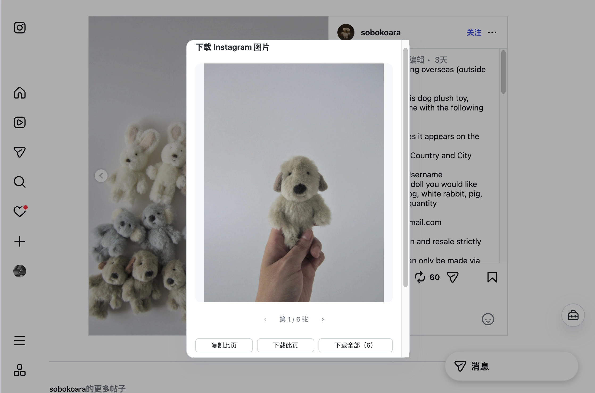
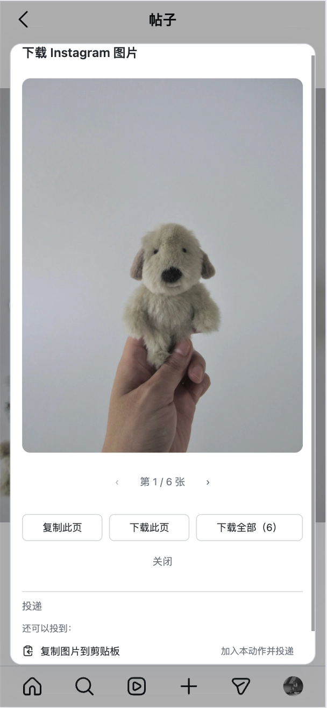
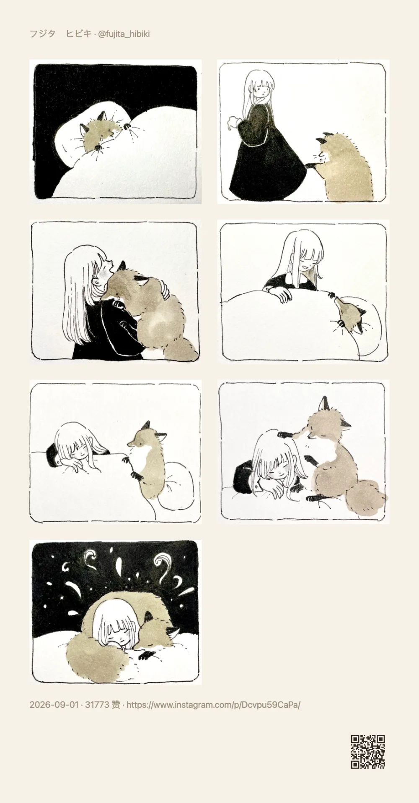
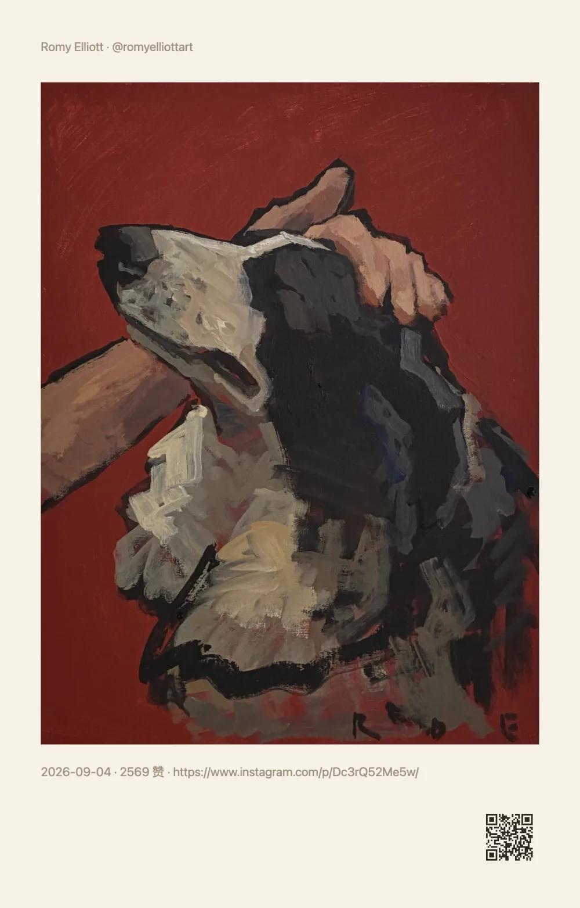

右键存下来的是缩略图
页面上右键「存储图片」，拿到的常是被压过的小尺寸版本，放大就糊。原图那条链接页面其实已经加载了，只是没递到你手上。
用例 · Instagram 图片下载
想存一张图，现在得走一遍：点开轮播、右键、另存为、改名字——十张图来十遍，手机上更难受。 顺手把这一步压成一下：打开帖子点「下载 Instagram 图片」，轮播图一次性全部取回， 在结果弹窗里逐张预览、复制，或者「下载全部（N）」一次存完。 图片在你自己的浏览器里取回——不经过第三方下载站，也不用把帖子链接贴给谁。
轮播全都要 · 先看再存 · 不经过任何服务器

为什么麻烦
存一张图本身不难，难的是每条路都留了个尾巴：要么尺寸不对，要么得重复动手，要么得先把链接交给别人。
页面上右键「存储图片」，拿到的常是被压过的小尺寸版本，放大就糊。原图那条链接页面其实已经加载了，只是没递到你手上。
一次点开一张、右键一次、再改一次名。想存整组，先点十遍；点漏一张还得回头找。
把帖子链接贴给一个不认识的站点：弹广告、等倒计时，有的还先把图片搬到它自己的服务器上再给你。
分享图是把内容重新排成一张卡片；这里要的是图本身——一像素不改，拿去当素材、当参考、当存档。
图存下来了，出处丢了：谁发的、什么时候发的、原文写了什么。回头想找原帖，只能凭记忆搜。
文件名是一串哈希，一堆图混在下载目录里，排不进相册、也认不出是哪条帖子。
怎么用
不用配任何连接、不用注册、不用额外登录 Instagram。动作跟着帖子页走——匹配到 /p/… 或 /reel/… 才会出现。
在 instagram.com 打开任意帖子或 Reels 详情页。浏览器里现在是什么登录状态，就用什么状态——不要求你登进去。
面板里的这条动作会先把这条帖子的完整图片列表取回来，所以轮播不会只给你当前看到的那一张。
逐张预览：复制此页直接粘进聊天 / 文档，下载此页存单张，下载全部（N）一次存整组。默认不自动往磁盘写东西。

这条动作做了什么
一句话说清：它把「帖子里的原图」变成你可以预览、复制、下载的一组文件，剩下的决定权都在你手上。
轮播图的图片会自动补全（页面自己只挂当前几张，动作会把这条帖子的图片全取回来），单条帖子最多 20 张。
用的是页面自己加载的那条大图链接——不重新压缩、不加水印、不改尺寸。
取图在你自己的浏览器里完成：没有我们的服务器，图片不上传、不中转，也不需要把链接交给任何下载站。
图片取回来后先留在结果弹窗里。不点下载就不会往磁盘写文件，也不会顺手替你保存到某个目录。
多数场景只是要把它粘进微信 / 文档 / 笔记——那就「复制此页」，省一次落盘再找文件的工夫。
默认用「用户名-日期」命名，不是一串哈希；存一批下来也知道哪张属于哪条帖子。
同一个帖子的另一种出口
下载原图与分享图是两条不同的出口，都从同一份提取结果出发：一个给你原图，一个把帖子重新排成卡片—— 作者、配图、文案、日期各归其位，右下角带一个能扫回原帖的二维码。



常见问题
不会。顺手没有服务器：取图在你的浏览器里完成（扩展由本地后台发起请求，油猴脚本走脚本管理器自己的请求能力），图片不上传、不经第三方中转。
唯一出网的地方，是去 instagram.com 取这条帖子的页面与图片本身。
不需要。动作读的是这条帖子的公开数据（帖子页与官方 embed 页）；浏览器里是什么状态就用什么状态。
它不绕过登录墙、不碰私密账号：拿不到就如实报错，不会去猜、也不会替你伪装身份。
暂时只能取到 Reels 的封面图，视频本体还不在这一步里。所以别为了下视频装它——这条边界写在明面上。
单条帖子最多 20 张，重复链接会自动去掉；单张超过约 7MB 的会被跳过，并在结果里说明失败了几张。
哪一张没取到会单独计数，不会假装成功——去看运行详情里的诊断就知道卡在哪一步。
默认不自动存：图片先留在结果弹窗里，点「下载全部（N）」才写进浏览器自己的下载目录（默认文件名是「用户名-日期」）。
不想落盘就只点「复制此页」，一样能把图拿到手。
扩展只在桌面浏览器上；手机需要装油猴脚本。不过 Instagram 在手机浏览器里会一直引导你打开 App，所以这条动作更适合在电脑上跑。
免费使用，没有广告，也没有需要付费解锁的功能；不需要注册任何账号，配置只存在你自己的浏览器里。
安装
商店装的两家都会自动更新；油猴脚本适合手机或不想装扩展的场景。
桌面首选，装好即自动更新。
与 Chrome 同一内核，功能一致。
先装脚本管理器（Tampermonkey / Violentmonkey；Android 用 Firefox，iOS 用 Safari + Userscripts），再装脚本。